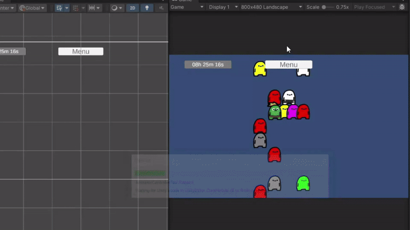
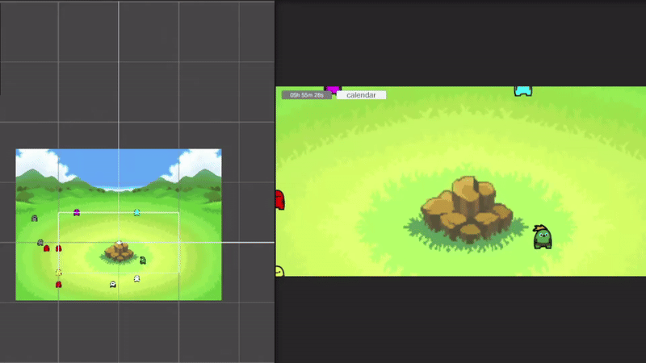

entry #5: glhf-grow-desktop-journalapp
Bit of a delay, but I wanted to start by saying Happy New Year to
everyone! Going into this year, I’ve been thinking a lot about what I
want to focus on long-term, and my main goal is to finally create an
actual multiplayer game and potentially release it publicly. I already
have an idea in mind for a chess-style game, but I want to save the
deeper explanation for a later post once things are more fleshed out.
That project will likely be my next major focus after this one.
Because of that, the 3D project may once again end up on the back
burner—though honestly, we’ll see how things go. I might continue
learning 3D on the side since it’s genuinely fun and something I still
want to get better at.
As for the glhf-grow-desktop version, I can finally say that I
see the finish line. This week was a big one—I made some major strides
and wrapped up what I’d consider the core functionality of the app. At
this point, the application is fully usable and does what it set out
to do. The next major phase, and what I’ll be focusing on throughout
February 2026, is asset creation and polish. That includes visuals,
small refinements, and making everything feel more cohesive. Once
that’s done, the plan is to upload the project somewhere and make it
publicly accessible. But before that, here’s a breakdown of what was
added this week.
One of the biggest challenges I ran into was figuring out how to
properly implement a file upload system. I was a bit stumped at
first and wasn’t entirely sure how to approach it from scratch.
Luckily, Unity’s Asset Store had a solution that was already set up.
After spending some time digging into it, I was able to get it
installed and running without too much trouble. With some help from
AI, I was able to understand how the system worked well enough to
adapt it to my needs and create a functional image upload feature.
Users can now upload images directly from their desktop, which was
incredibly satisfying to see working. On top of that, the images are
saved correctly and displayed within the app, making the feature feel
complete rather than just experimental. With this addition, the app is
now essentially fully functional—at least in terms of its main
features. I also went back and reversed the calendar menu so that the
most recent entries appear first, which feels much more intuitive.

The following day, I shifted my focus toward quality-of-life
improvements. I added a camera system that includes zooming
capabilities, as well as allowing the user to move the camera around
freely. This alone made interacting with the app feel significantly
smoother and more flexible. I also increased the size of the borders
and committed to a final build resolution of 1200×600px, with the goal
of having the app run borderless when opened. On top of that, I added
a background, and honestly, it made a massive difference in how the
app feels visually. The background is taken from Pokémon Mystery
Dungeon’s friend areas, and it adds a cozy, familiar atmosphere that
fits the tone I was going for.
For a bit of fun—and also usability—I added a feature where pressing L
will line up the top 55 entries in order. It’s a small thing, but
features like this really help the app feel more intentional and
complete. With all of these systems now in place, the base
functionality of the app is officially finished. From here, it’s
mostly about design work, refinement, and making everything look and
feel as good as possible. Once that’s done, I’m planning to release it
and hopefully gather some feedback to see what works well and what
could be improved. I’m also hoping to eventually create an Android and
iOS version, since I think this project would perform even better as a
mobile app and reach a wider audience.
